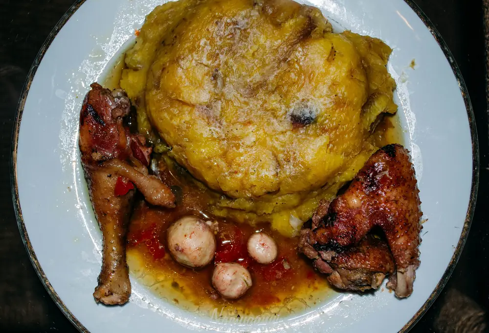
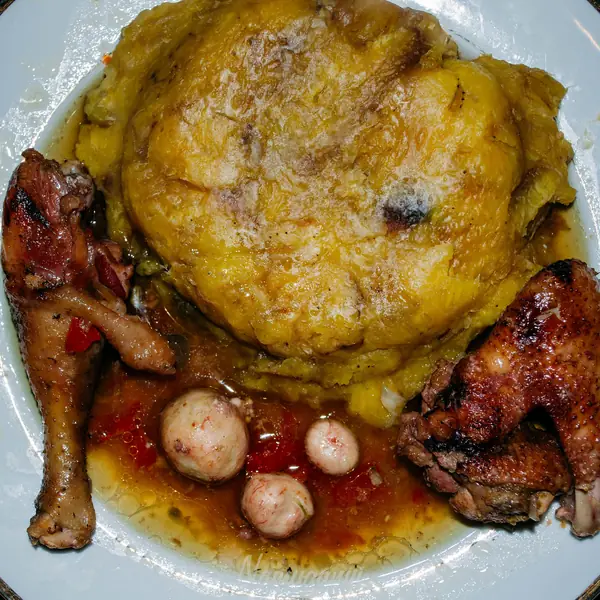
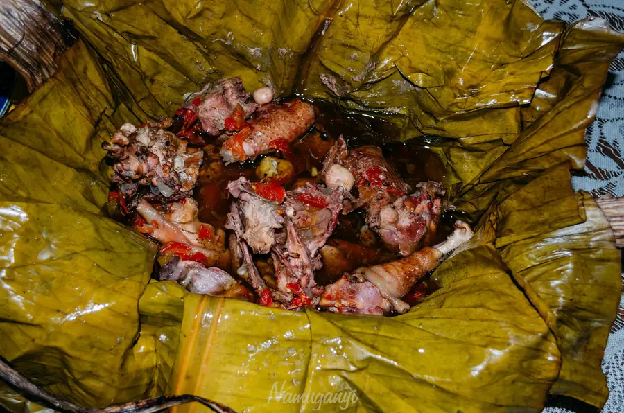
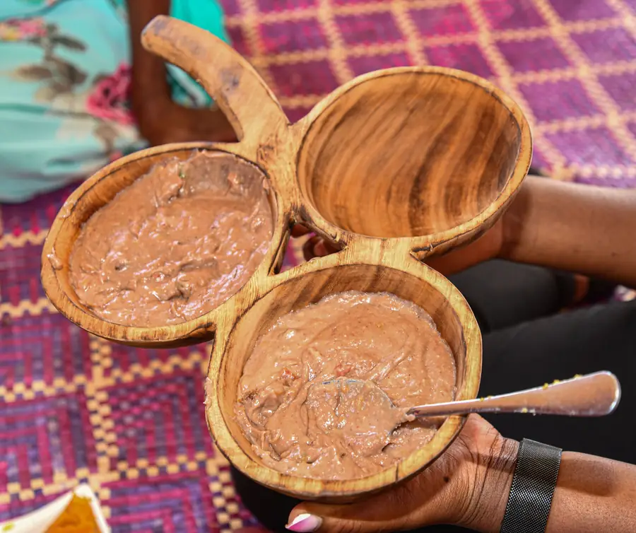
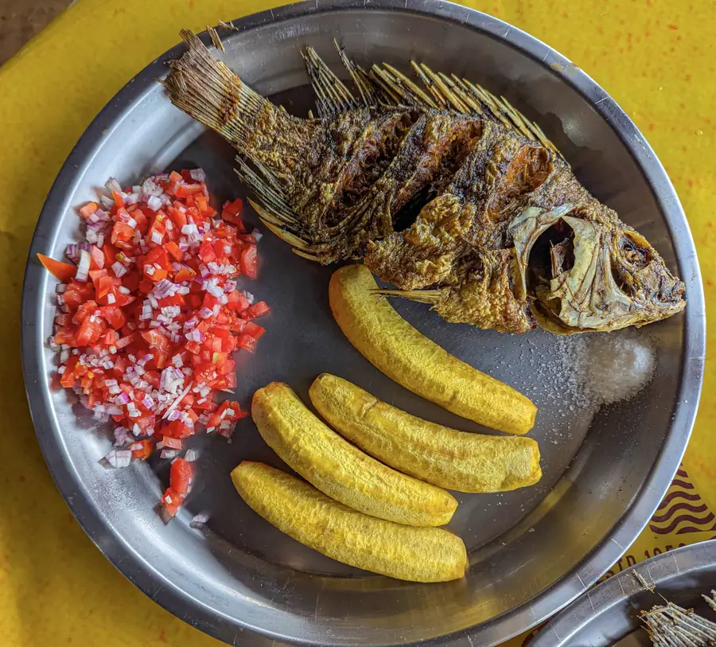
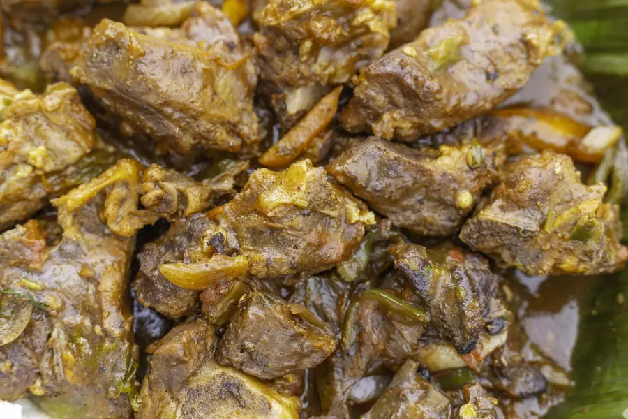

Matooke
Green bananas steamed in their leaves, then mashed until soft and golden. Simple, filling, and the dish reviewers single out.

Bar & Restaurant Lukuli Road · Makindye · Kampala
Ugandan favourites, drinks and time well spent in Makindye.
Luwombo parcels & matooke · illustrative photography
Highlights from the kitchen, not the full menu. Dishes and prices change, so ask the team what’s cooking today.

Green bananas steamed in their leaves, then mashed until soft and golden. Simple, filling, and the dish reviewers single out.
Stew wrapped in smoked banana leaf and steamed slowly, so the sauce takes on the leaf’s gentle smokiness. Chicken luwombo in groundnut sauce is a Buganda classic.



Whole fish, fried until the skin crisps, with matooke or chips on the side.

Slow-stewed in a rich gravy, or roasted over the coals as muchomo.
Food photographs show typical Ugandan dishes and are illustrative, not taken at Papaz Spot. Photo credits
The Spot
Papaz Spot is a bar and restaurant on Lukuli Road in Makindye: somewhere to sit down to a full plate, order a cold drink and let the evening run on. The Daily Monitor reports that it is owned by the Ugandan musician Mesach Semakula.
Music
Monday nights belong to the band. Line-ups vary; call 0789 130681 to find out who’s playing.
Schedule as listed on Papaz Spot’s TikTok, October 2026. Watch clips on TikTok
Restaurant review
“…the matooke was indescribably superb and mabobezze ddala.”
Google review
“…the staff welcomed me warmly and made me feel comfortable.”
Google review
“…the fair prices for their meals and the attention they give to clients…”